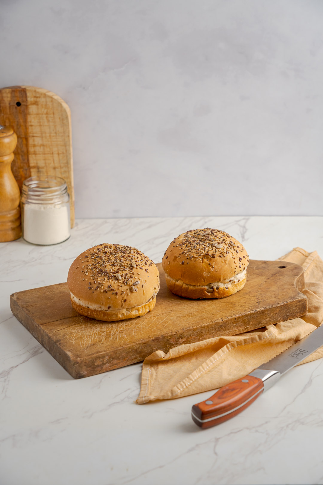

Más vendido
Pan para Hamburguesas
Miga suave y esponjosa, estructura firme que no se desarma y cocción pareja. Disponible en 12 cm y 10 cm, y en variedades clásico, semillas, sésamo y queso.
Consultar precio